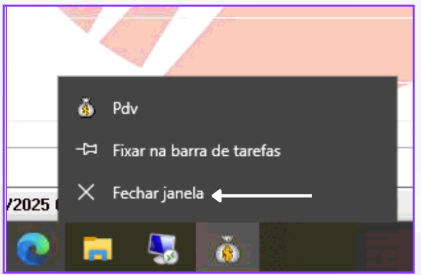
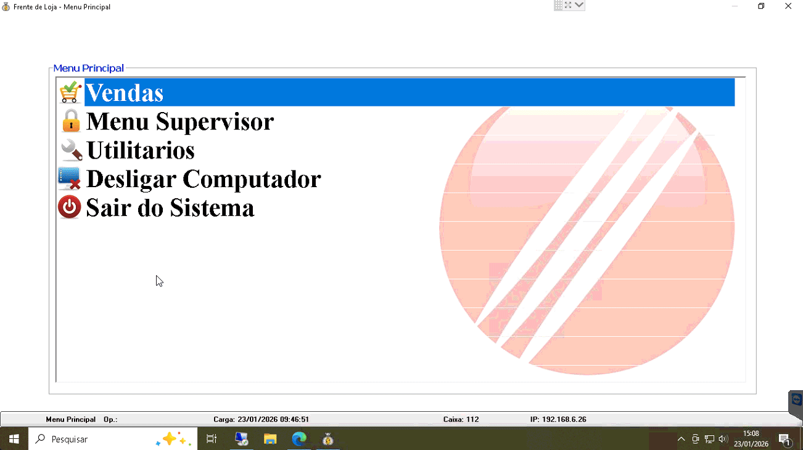
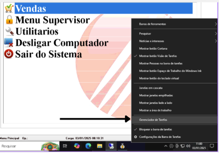
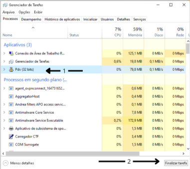

PDV parou de puxar vendas dav
Causa Provável:
Aplicativo que faz comunicação entre PDV e servidor Está fechado.
Como Resolver:
Fechar app do Pdv e Abrir novamente.
Passo a Passo para resolver:
Fechar e abrir o aplicativo do PDV:
- Passo 1: Clique com o botão direito do mouse encima do aplicativo do PDV e clique em fechar Janela:.


Caso não de certo você pode fechar o aplicativo da seguinte maneira:
- Passo 1: Clique com o botão direito do mouse encima da barra de tarefa e selecione Gerenciador de Tarefas:
- Passo 2: Na janela que irá abrir,localize o aplicativo do PDV, clique com o botão direito do mouse encima do aplicativo e selecione Finalizar Tarefa:


Depois de fechado abra novamente o aplicativo do PDV. Depois disso teste novamente se as vendas irão puxar da DAV
Nota: Se após esses testes ainda assim não funcionar, Entre em contato conosco
informando que já fez o processo acima.